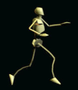
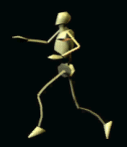
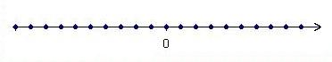

Imaginons maintenant qu'au lieu de vouloir compter des objets on veuille compter des pas. Plus précisémment il s'agit de repérer la position d'un marcheur sur un axe orienté (gauche → droite dans notre cas).
définition
Ainsi un 'entier relatif' correspond à un déplacement d'un certain nombre entier de pas sur l'axe, si le déplacement est de 3 pas dans le sens de l'axe, nous notons le déplacement +3, si le déplacement est de 2 pas dans le sens contraire (sens négatif) nous le notons -2.
définition
Le nombre 0 correspond à l'immobilité au déplacement nul. Ainsi +0=-0 (ne pas bouger dans un sens ou ne pas bouger dans l'autre c'est rester en place).
Now imagine that instead of wanting to count objects we want to count steps. More precisely, it is a question of identifying the position of a walker on an oriented axis (left → right in our case).
definition
So an 'integer' corresponds to a displacement of a certain natural number of steps on the axis, if the displacement is 3 steps in the direction of the axis, we denote the displacement +3, if the displacement is 2 steps in the opposite direction (negative direction) we denote it -2.
definition
The number 0 corresponds to immobility, a nul displacement. So +0=-0 (not moving in one direction or not moving in the other is to stay in place).
Marche positive
Positive walk
Marche négative
Negative walk



Image https://gifer.com/fr/SxtI
Remarque: comme +0=-0 on note simplement cet élément 0 (sans signe). Voyons tout de suite comment définir l'addition de 2 entiers relatif m et n. si m et n sont deux déplacements, nous notons m+n le déplacement résultant du déplacement m suivi du déplacement n. Avec cette définition on voit tout de suite que: (+3)+(+2) = +5 (-3)+(-2)= -5 (+3)+(-2)=+1 (-3)+(+2)=-1 On voit aussi que : 0+n=n+0 = n ∀ n que tout entier relatif possède un opposé pour l'addition, etc.. etc.. Remarque: Cette façon de faire est simple, intuitive. C'est certainement celle qu'il faut recommander pour enseigner les entiers signés à des élèves de collège. Cependant, elle a deux inconvénients.
Elle est peu rigoureuse du strict point de vue de la théorie des ensembles (elle présuppose la définition d'un axe, d'une orientation, etc..)
Elle n'est guère généralisable, elle est 'faite pour ℕ'.
Si l'on veut formaliser cette définition pour pallier au premier inconvénient, c'est assez simple: Il suffit de considérer la S={+,-} puis ensuite le S×ℕ Sur ce produit cartésien on introduit la ≡ suivante: Tout couple est relié à lui-même et à lui-même seulement sauf (+,0) qui est relié à (-,0). On voit donc que les sont toutes des singletons à l'exception de la paire { (-,0),(+,0) } Pour finir on convient de changer les notations (+,3) sera noté simplement +3. Cela fait on désigne par ℤ le quotient du produit cartésien S×ℕ par la relation d'équivalence ≡. Notre construction n'utilise que des opérations qui, partant d'ensembles, conduisent à des ensembles. Par contre, il est plus difficile, par ce moyen de généraliser cette construction, nous voulons dire symétriser une
avec . C'est pourquoi nous allons définir dans la page suivante, un procédé moins intuitif mais plus général.
Remark: Since +0=-0 we simply denote this element 0 (without sign). Let us now see how to define the sum of 2 integers m and n. if m and n are two displacements, we note m+n the displacement resulting of the displacement followed by the displacement n. With this definition we immediately see that: (+3)+(+2) = +5 (-3)+(-2)= -5 (+3)+(-2)=+1 (-3)+(+2)=-1 We also see that: 0+n=n+0 = n ∀n that every relative integer has an opposite for addition, etc.. etc.. Remark: This way of doing things is simple, intuitive. It is certainly the one recommended for teaching signed integers to students of secondary schools. However, it has two drawbacks.
It is not very rigorous from the strict point of view of set theory (it presupposes the definition of an axis, a direction, etc.)
It is hardly generalizable, it is 'made for ℕ'.
If we want to formalize this definition to overcome the first drawback, it's quite simple: Just consider the S={+,-} then the S×ℕ On this Cartesian product we introduce the ≡ next: Every couple is linked to itself and to itself only except (+,0) which is connected to (-,0). We therefore see that the are all singletons except the pair { (-,0),(+,0) } Finally we agree to change the notations ; (+,3) will be noted simply +3. This being done, we denote by ℤ the quotient of the product Cartesian S×ℕ by the relation of equivalence ≡. Our construction uses only set operations which, therefore lead to sets. However, it is more difficult, by this way, to generalize this construction, we mean to mirror an
with . Therefore we are going to define on the next page, a less intuitive but more general procedure.